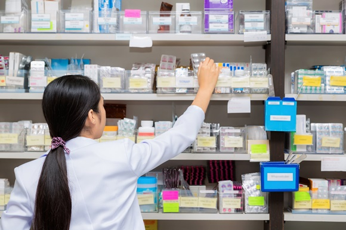

Pharmacy is related to health sciences. It is the profession responsible for the preparation, dispensing and appropriate use of medication
and which provides services to achieveoptimal therapeutic outcomes. A Pharmacist’s job is to prepare, mix, compound or dispense drugs and
medicines, ointments, powder, pills, tablets and injections on the prescription of a medical practitioner, dentist or veterinarian.
Qualification requirements
- To be able to pursue the Pharmaceutical Sciences, a student must study a combination of Physics, Chemistry and Biology in Class 12th.
- There are over 225 programs in Pharmacy conducted by different universities in India. The main courses in Pharmacy are the 2 years
diploma in Pharmacy (D.Pharm), 4 years Bachelor of Pharmacy (B.Pharm), 2 years Master of Pharmacy (M.Pharm) and Ph.D programmes.
Colleges to choose from
- Jamia Hamdard, New Delhi
- BITS, Pilani
- Punjab University, Chandigarh
- National Institute of Pharmaceutical Research, Hyderabad
- BIT, Mesra
- Amity University